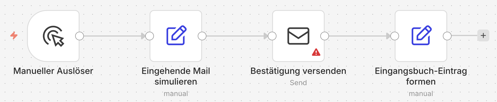

Einführung
Bevor wir mit dem ersten Workflow beginnen, lohnt sich ein kurzer Überblick über die Bausteine, mit denen wir in diesem Kurs arbeiten. Jeder Baustein hat eine bestimmte Rolle, vom Auslöser eines Workflows bis zum einzelnen Verarbeitungsschritt. Diese Einführung erklärt jeden Baustein in zwei Sätzen, damit klar ist, worauf wir aufbauen.
n8n als Plattform
n8n ist eine visuelle Workflow-Plattform, in der Aktionen als verbundene Knoten dargestellt werden. Sie kombiniert über fünfhundert fertige Integrationen mit klassischer Datenverarbeitung und KI-Bausteinen, und zwar alles im selben Editor.
Workflow
Ein Workflow ist eine Kette von Schritten, die durch ein definiertes Ereignis ausgelöst wird und einen bestimmten Zweck verfolgt. Beispielsweise: Eine eingehende Mail einer Kategorie zuordnen (etwa Vertriebs-Anfrage, Support-Anfrage oder Beschwerde), eine Bestätigung verschicken und einen Eintrag in einer Tabelle anlegen.

Trigger
Der Trigger ist der Auslöser eines Workflows. Es gibt zeitgesteuerte Trigger, App-spezifische Trigger und manuelle Trigger für den Test im Editor.
Node
Ein Node ist ein einzelner Schritt im Workflow. Jede Node nimmt Daten vom vorhergehenden Schritt entgegen, führt eine Aktion aus und reicht das Ergebnis an die nächste Node weiter.
Sticky Note
Eine Sticky Note ist eine erklärende Notiz direkt auf der Arbeitsfläche, ohne aktive Funktion im Datenfluss. Sie dient dazu, Workflows lesbar zu halten und Abschnitte zu beschriften.
Execution
Eine Execution ist ein einzelner Lauf eines Workflows von Anfang bis Ende. n8n hält pro Execution ein Log mit Eingangsdaten, Knoten-Ergebnissen und Fehlern bereit.
Expression
Eine Expression ist ein kurzer Ausdruck, mit dem Daten aus dem vorhergehenden Schritt referenziert werden, beispielsweise { $json.sender } für den Absender einer eingehenden Mail. Expressions werden in n8n meist per Drag-and-Drop aus dem Output-Panel des Vor-Knotens erzeugt.
Credentials
Credentials sind Zugangsdaten zu externen Systemen wie Mail-Servern, Cloud-APIs oder Datenbanken. n8n verwaltet sie als eigenständige Objekte, die getrennt vom Workflow gespeichert und referenziert werden.
Integration und API
Eine Integration ist eine vorbereitete Verbindung zwischen n8n und einer externen Anwendung wie Salesforce, Slack oder Notion, die alle technischen Details der Anbindung kapselt. Sie nutzt im Hintergrund die API der externen Anwendung, also die dokumentierte Schnittstelle, über die andere Systeme automatisiert auf deren Funktionen und Daten zugreifen können.
Data Table
Eine Data Table ist die in n8n eingebaute Tabellen-Datenbank. Sie funktioniert wie eine kleine, mitgelieferte Datenbank für Workflow-Ergebnisse, ohne dass ein externes Tool angebunden werden muss.
KI-Knoten und Sprach-Modell
n8n bietet mehrere KI-Knoten, vom einfachen Modellaufruf bis zum AI Agent. Das Sprach-Modell (LLM, Large Language Model) ist die Komponente, die in natürlicher Sprache antwortet, wahlweise von OpenAI, Anthropic, Google oder als lokales Modell über Ollama.
Ausblick: Agenten-Konzepte
Sobald das deterministische Fundament steht, kommen die eigentlichen Agent-Bausteine dazu: der AI Agent mit seiner ReACT-Schleife, Tools und System-Prompts, RAG mit Embeddings und Vector Store, Approval-Schritte (Human-in-the-Loop), Multi-Agent-Systeme sowie Eval und Monitoring zur Qualitätssicherung. Diese Konzepte sind nicht Teil dieses Grundlagenkurses, sondern werden ausführlich im Aufbaukurs KI-Agenten in n8n behandelt.